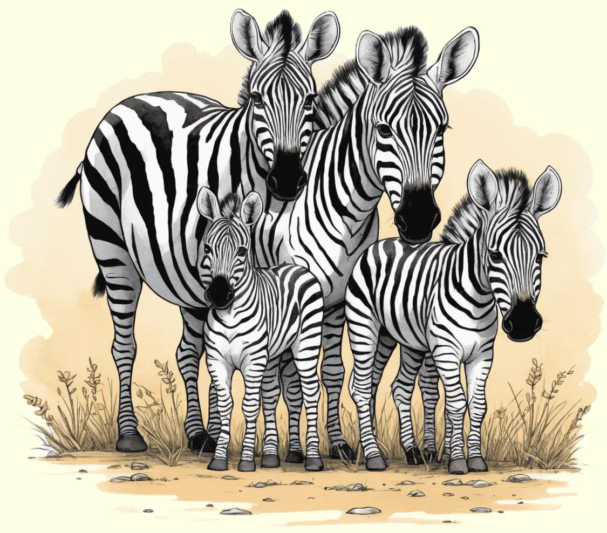

Zebras, die gestreiften Stars der Savanne, fallen mit ihren einzigartigen Streifenmuster auf.
Entdecke die Besonderheiten dieser faszinierenden Tiere und erfahre, wie sie in den weiten Graslandschaften Afrikas leben und sich vor Raubtieren schützen.

Schwarz-weiße Streifenkünstler
Zebras sind faszinierende Tiere, die in den weiten Savannen Afrikas leben. Ihr auffälliges Erscheinungsbild mit den charakteristischen Schwarz-Weiß-Streifen macht sie zu den Akteuren der Savanne. Es gibt verschiedene Zebraarten, darunter das Steppenzebra, das Bergzebra und das Grevyzebra. Jedes Zebra hat ein einzigartiges Streifenmuster, das es leicht von anderen unterscheidet.
Die Streifen der Zebras sind nicht nur schön anzusehen, sondern erfüllen auch wichtige Funktionen. Sie dienen als Tarnung vor Raubtieren, die es schwer haben, die einzelnen Zebras in der großen Herde zu unterscheiden. Außerdem helfen die Streifen dabei, die Körpertemperatur der Zebras zu regulieren.
Harmonische Herdentiere
Zebras sind gesellige Tiere und leben oft in großen Herden, um sich gemeinsam vor Raubtieren zu schützen. Innerhalb der Herde bilden sich oft enge Freundschaften zwischen den Zebras. Ihre beeindruckende Kommunikation erfolgt nicht nur durch Laute, sondern auch durch Körpersprache, wie das Wackeln des Schwanzes oder das Aufstellen der Ohren.
Einzigartig ist auch die Art, wie Zebras ihre Jungen beschützen. Bei Gefahr versammeln sich die Stuten und ihre Fohlen in der Mitte der Herde, während die starken Hengste die äußeren Ränder verteidigen. Diese kooperative Strategie zeigt, wie eng verbunden Zebras in ihrer Gemeinschaft leben.